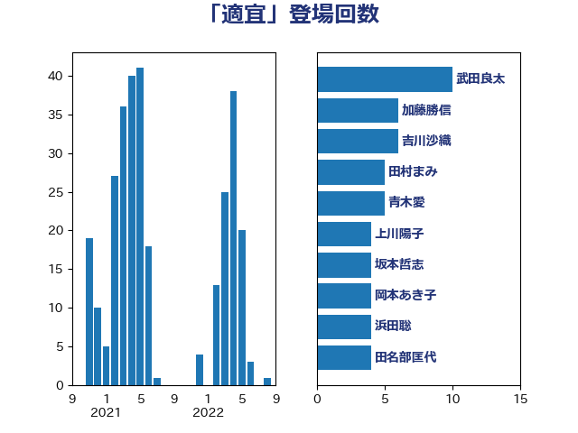

単語「適宜」

| 武田良太 | 自由民主党 | 10 回 |
| 加藤勝信 | 自由民主党 | 6 回 |
| 吉川沙織 | 立憲民主党 | 6 回 |
| 田村まみ | 国民民主党 | 5 回 |
| 青木愛 | 立憲民主党 | 5 回 |
| 上川陽子 | 自由民主党 | 4 回 |
| 坂本哲志 | 自由民主党 | 4 回 |
| 岡本あき子 | 立憲民主党 | 4 回 |
| 浜田聡 | NHK党 | 4 回 |
| 田名部匡代 | 立憲民主党 | 4 回 |
| 古川禎久 | 自由民主党 | 3 回 |
| 打越さく良 | 立憲民主党 | 3 回 |
| 足立康史 | 日本維新の会 | 3 回 |
| 鈴木俊一 | 自由民主党 | 3 回 |
| 井上信治 | 自由民主党 | 2 回 |
| 吉田忠智 | 立憲民主党 | 2 回 |
| 坂井学 | 自由民主党 | 2 回 |
| 城井崇 | 立憲民主党 | 2 回 |
| 塩田博昭 | 公明党 | 2 回 |
| 大串博志 | 立憲民主党 | 2 回 |
| 宮本周司 | 自由民主党 | 2 回 |
| 小西洋之 | 立憲民主党 | 2 回 |
| 岸信夫 | 自由民主党 | 2 回 |
| 川田龍平 | 立憲民主党 | 2 回 |
| 後藤茂之 | 自由民主党 | 2 回 |
| 木村次郎 | 自由民主党 | 2 回 |
| 松沢成文 | 日本維新の会 | 2 回 |
| 柚木道義 | 立憲民主党 | 2 回 |
| 津島淳 | 自由民主党 | 2 回 |
| 浅野哲 | 国民民主党 | 2 回 |
| 田村憲久 | 自由民主党 | 2 回 |
| 石原正敬 | 自由民主党 | 2 回 |
| 落合貴之 | 立憲民主党 | 2 回 |
| 青柳仁士 | 日本維新の会 | 2 回 |
| こやり隆史 | 自由民主党 | 1 回 |
| 三ッ林裕巳 | 自由民主党 | 1 回 |
| 三木亨 | 自由民主党 | 1 回 |
| 中野洋昌 | 公明党 | 1 回 |
| 井上哲士 | 日本共産党 | 1 回 |
| 井坂信彦 | 立憲民主党 | 1 回 |
| 伊東良孝 | 自由民主党 | 1 回 |
| 伊藤孝江 | 公明党 | 1 回 |
| 伊藤渉 | 公明党 | 1 回 |
| 加藤鮎子 | 自由民主党 | 1 回 |
| 古賀友一郎 | 自由民主党 | 1 回 |
| 吉田統彦 | 立憲民主党 | 1 回 |
| 堀内詔子 | 自由民主党 | 1 回 |
| 大野敬太郎 | 自由民主党 | 1 回 |
| 太栄志 | 立憲民主党 | 1 回 |
| 安江伸夫 | 公明党 | 1 回 |
| 小林鷹之 | 自由民主党 | 1 回 |
| 山口壯 | 自由民主党 | 1 回 |
| 山田勝彦 | 立憲民主党 | 1 回 |
| 平井卓也 | 自由民主党 | 1 回 |
| 御法川信英 | 自由民主党 | 1 回 |
| 徳永エリ | 立憲民主党 | 1 回 |
| 斉藤鉄夫 | 公明党 | 1 回 |
| 木原誠二 | 自由民主党 | 1 回 |
| 松野博一 | 自由民主党 | 1 回 |
| 柳ヶ瀬裕文 | 日本維新の会 | 1 回 |
| 柴山昌彦 | 自由民主党 | 1 回 |
| 柴田巧 | 日本維新の会 | 1 回 |
| 柿沢未途 | 無所属 | 1 回 |
| 梅村みずほ | 日本維新の会 | 1 回 |
| 梅村聡 | 日本維新の会 | 1 回 |
| 横沢高徳 | 立憲民主党 | 1 回 |
| 櫻田義孝 | 自由民主党 | 1 回 |
| 沢田良 | 日本維新の会 | 1 回 |
| 河西宏一 | 公明党 | 1 回 |
| 河野義博 | 公明党 | 1 回 |
| 浅田均 | 日本維新の会 | 1 回 |
| 源馬謙太郎 | 立憲民主党 | 1 回 |
| 牧原秀樹 | 自由民主党 | 1 回 |
| 田中健 | 国民民主党 | 1 回 |
| 石田昌宏 | 自由民主党 | 1 回 |
| 礒崎哲史 | 国民民主党 | 1 回 |
| 神谷裕 | 立憲民主党 | 1 回 |
| 福重隆浩 | 公明党 | 1 回 |
| 稲津久 | 公明党 | 1 回 |
| 竹内真二 | 公明党 | 1 回 |
| 笠浩史 | 無所属 | 1 回 |
| 緑川貴士 | 立憲民主党 | 1 回 |
| 羽田次郎 | 立憲民主党 | 1 回 |
| 葉梨康弘 | 自由民主党 | 1 回 |
| 藤巻健太 | 日本維新の会 | 1 回 |
| 藤田文武 | 日本維新の会 | 1 回 |
| 赤木正幸 | 日本維新の会 | 1 回 |
| 赤池誠章 | 自由民主党 | 1 回 |
| 進藤金日子 | 自由民主党 | 1 回 |
| 道下大樹 | 立憲民主党 | 1 回 |
| 音喜多駿 | 日本維新の会 | 1 回 |
| 麻生太郎 | 自由民主党 | 1 回 |